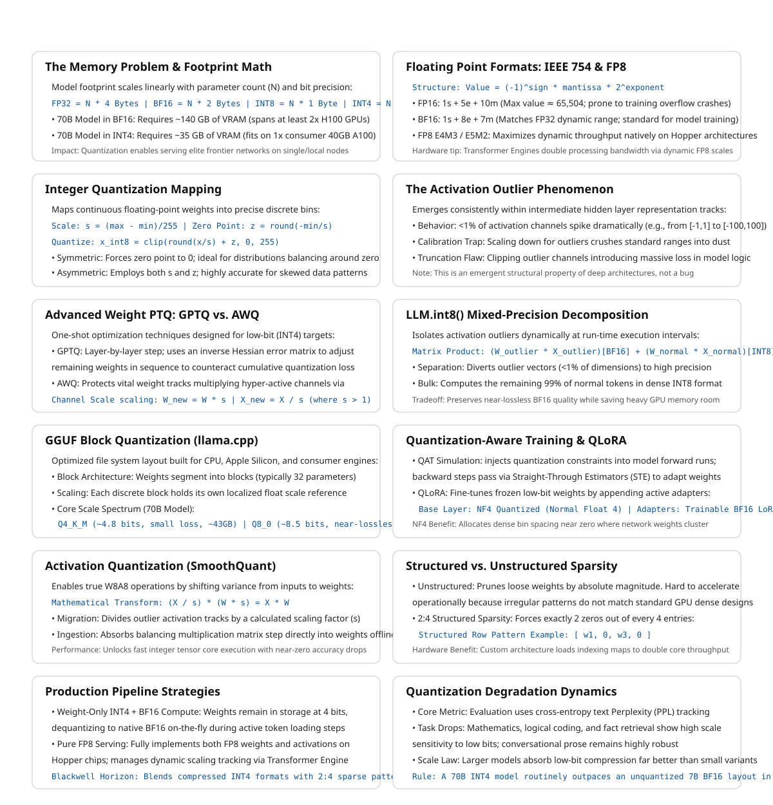

9 Quantization and Model Compression
The canonical question for this chapter: A 70B parameter model in full precision requires 140 GB of GPU memory and costs a fortune to serve. How do you make it smaller, faster, and cheaper without making it useless?
9.1 The memory problem
A language model’s parameters are floating-point numbers. The precision of those numbers (how many bits are used to represent each one) determines how much memory the model occupies.
For a model with N parameters:
FP32 (4 bytes per parameter): N × 4 bytes
BF16 (2 bytes per parameter): N × 2 bytes
INT8 (1 byte per parameter): N × 1 byte
INT4 (0.5 bytes per parameter): N × 0.5 bytesFor a 70B parameter model:
FP32: 70B × 4 = 280 GB -> requires 4× H100s just for weights
BF16: 70B × 2 = 140 GB -> requires 2× H100s
INT8: 70B × 1 = 70 GB -> fits on 1× H100 with room for KV cache
INT4: 70B × 0.5 = 35 GB -> fits on 1× H100 with substantial headroomThe difference between BF16 and INT8 is not just cost it is also whether a model can be served on a single GPU at all. INT4 opens models to consumer hardware: a 70B model at INT4 fits on a single 40 GB A100 or on two consumer RTX 4090s. This is the practical motivation for quantization and everything else follows from it.
9.2 Floating point formats
Understanding quantization requires understanding the number formats involved.
9.2.1 IEEE 754 floating point
Standard floating point represents numbers as:
value = (-1)^sign × mantissa × 2^exponent
FP32 (float): 1 sign bit + 8 exponent bits + 23 mantissa bits = 32 bits
Range: ±3.4 × 10^38, precision: ~7 decimal digits
FP16 (half): 1 sign bit + 5 exponent bits + 10 mantissa bits = 16 bits
Range: ±65,504, precision: ~3 decimal digits
BF16: 1 sign bit + 8 exponent bits + 7 mantissa bits = 16 bits
Range: same as FP32, precision: ~2 decimal digitsThe key difference between FP16 and BF16: BF16 keeps FP32’s exponent range (8 bits) but reduces the mantissa. This matters for training, large language models encounter large gradient values that overflow FP16’s limited range (max ≈ 65,504) but fit comfortably in BF16’s range. BF16 became the standard training format for large models after FP16 was found to cause instability in very deep networks.
9.2.2 FP8
FP8 is a family of 8-bit floating point formats introduced with the H100 GPU:
E4M3: 1 sign + 4 exponent + 3 mantissa bits -> more precision, less range
E5M2: 1 sign + 5 exponent + 2 mantissa bits -> more range, less precisionThe H100’s Transformer Engine supports FP8 matrix multiplications natively, roughly doubling throughput compared to BF16 on the same hardware. FP8 is now the recommended training and inference format for frontier models on H100-class hardware.
9.3 Integer quantization
Integer formats represent numbers in a fundamentally different way, as scaled integers rather than floating point values.
9.3.1 The quantization mapping
To quantize a floating point value to INT8:
1. Find the range of values to quantize: [x_min, x_max]
2. Compute scale: s = (x_max - x_min) / 255
3. Compute zero point: z = round(-x_min / s)
4. Quantize: x_int8 = clip(round(x / s) + z, 0, 255)
5. Dequantize: x_approx = s × (x_int8 - z)The round-trip introduces quantization error: x_approx ≈ x, not x_approx = x. The magnitude of this error depends on the precision of the scale factor and the distribution of values being quantized.
For INT8, values are mapped to the range [0, 255] (unsigned) or [-128, 127] (signed). For INT4, the range is [0, 15] or [-8, 7]. The smaller the integer range, the coarser the quantization, and the larger the potential error.
9.3.2 Symmetric vs. asymmetric quantization
Symmetric quantization uses a single scale factor with zero point at 0:
x_int = round(x / s)Simple and fast. Works well when the distribution is symmetric around zero.
Asymmetric quantization uses both scale and zero point, as shown above. More accurate for asymmetric distributions (e.g., activations after ReLU, which are always non-negative).
9.4 The outlier problem
LLM quantization is harder than quantizing small networks for edge deployment. The reason: outlier values.
LLM activations (the values produced by the model’s hidden layers, not the weights) contain a small fraction of channels with values that are orders of magnitude larger than typical. In a layer where most activation values are in the range [-1, 1], a few channels may have values in the range [-100, 100].
If you set the quantization scale based on these outlier channels, all the normal-range values are compressed into a tiny fraction of the integer range, losing most of their precision. If you clip the outlier channels, you introduce large errors for those specific values.
This outlier phenomenon is a consistent property of large language models, it appears in GPT-3, LLaMA, and their successors. It is not a training bug but a structural feature of how the models represent information.
The major INT8 and INT4 quantization schemes are largely distinguished by how they handle outliers.
9.5 Post-training quantization methods
Post-training quantization (PTQ) quantizes a trained model without additional training. It uses a small calibration dataset to measure activation statistics and find optimal scale factors.
9.5.1 LLM.int8()
Dettmers et al. (2022) introduced a mixed-precision decomposition specifically for LLM outliers:
- Identify the small fraction of “outlier” feature dimensions (typically less than 1% of channels, but containing most of the activation magnitude)
- Extract those channels and compute them in full BF16 precision
- Quantize all remaining channels to INT8 and compute in INT8
- Sum the two partial results
W × X = W_outlier × X_outlier (BF16)
+ W_normal × X_normal (INT8)This preserves accuracy in the outlier channels while achieving INT8 efficiency for the remaining 99%+ of computation. The memory savings are slightly less than pure INT8 (due to the BF16 outlier channels), but the quality preservation is close to BF16.
LLM.int8() enabled serving 175B+ parameter models on a single GPU for the first time. It is integrated into HuggingFace Transformers as load_in_8bit=True.
9.5.2 GPTQ
Frantar et al. (2022) introduced GPTQ, a one-shot weight quantization method for INT4 quantization:
- Process the weight matrix layer by layer
- For each column (output neuron), quantize the weights to INT4
- Compute the quantization error for this column
- Propagate the error to unquantized columns using the inverse Hessian of the weight matrix, updating them to compensate for the quantized column’s error
- Repeat for each column in sequence
The Hessian-based error compensation is the key innovation. Instead of quantizing each weight independently, GPTQ adjusts remaining weights to compensate for already-quantized weights, minimizing cumulative error.
GPTQ typically achieves INT4 quantization with perplexity degradation of less than 0.5 on standard benchmarks for models above 30B parameters. Below 30B, degradation is more noticeable. Larger models quantize more gracefully, a well-known empirical observation without a fully satisfying theoretical explanation.
GPTQ requires a calibration dataset (typically 128–512 samples from the training data) and takes several hours to run for large models. The result is stored as INT4 weights with FP16/BF16 scale factors.
9.5.3 AWQ
Lin et al. (2023) introduced AWQ (Activation-aware Weight Quantization) with a different approach to the outlier problem: instead of handling outlier activations differently at inference time, AWQ identifies the weight channels that correspond to the most important activations and protects them during quantization.
The insight: not all weights are equally important. Weights that multiply high-activation channels contribute more to the output than weights that multiply low-activation channels. Quantizing the important weights with less error and the unimportant weights with more error is better than treating all weights equally.
AWQ achieves this through per-channel scaling: multiply important weight channels by a scale factor > 1 before quantization (expanding their range relative to the quantization step size, reducing quantization error) and divide the corresponding activations by the same factor (maintaining the mathematical equivalence of the operation):
W × X = (W × s) × (X / s) for any scale sIf s > 1 for the important channels, quantizing W × s to INT4 introduces less error in the important channels than quantizing W directly. The activation scaling by 1/s is a free operation at inference time (absorbed into the previous layer’s output scaling).
AWQ is faster to apply than GPTQ (minutes rather than hours), does not require Hessian computation, and achieves comparable or slightly better accuracy on most benchmarks. It has become the preferred method for INT4 quantization in many production pipelines.
9.6 GGUF and llama.cpp quantization
GGUF (GPT-Generated Unified Format) is a model format developed by the llama.cpp project, optimized for inference on consumer hardware, CPUs, Apple Silicon, and consumer GPUs. It supports a range of quantization schemes with different quality-size tradeoffs:
| Quantization | Bits per weight | Memory (70B) | Quality loss |
|---|---|---|---|
| Q2_K | ~2.6 | ~23 GB | Significant |
| Q3_K_M | ~3.4 | ~30 GB | Moderate |
| Q4_K_M | ~4.8 | ~43 GB | Small |
| Q5_K_M | ~5.7 | ~50 GB | Very small |
| Q6_K | ~6.6 | ~58 GB | Minimal |
| Q8_0 | ~8.5 | ~75 GB | Near-lossless |
The naming convention: Q4 = 4-bit quantization base, K = k-quants (a more accurate block quantization scheme), M = medium size variant.
GGUF uses mixed-precision block quantization: weights are divided into blocks (typically 32 values), each block is quantized with its own scale factor, and additional “super-block” scale factors quantize the block scales themselves. This reduces the overhead of storing per-block scale factors while maintaining accuracy.
GGUF is the dominant format for local inference with Ollama, LM Studio, and llama.cpp. It is not typically used in high-throughput serving (vLLM and TensorRT-LLM use their own formats), but it is how most self-hosted models run on consumer hardware.
9.7 Quantization-aware training
Post-training quantization applies quantization after the fact, introducing error that cannot be corrected. Quantization-aware training (QAT) incorporates the quantization into the training process, allowing the model to adapt to quantization during training.
9.7.1 Simulated quantization
QAT uses simulated quantization: during the forward pass, weights and activations are quantized to the target format; during the backward pass, gradients flow through as if the quantization had not occurred (the straight- through estimator). The model learns weight values that produce low loss even after quantization.
def quantize_forward(w, bits=8):
# Quantize weights for forward pass
scale = w.abs().max() / (2**(bits-1) - 1)
w_int = torch.round(w / scale).clamp(-(2**(bits-1)), 2**(bits-1) - 1)
w_quantized = w_int * scale # Dequantize for computation
# Straight-through: gradient passes through as if w_quantized = w
return w + (w_quantized - w).detach()The result: weights that, when quantized, produce minimal performance loss. QAT typically achieves better quality than PTQ at the same bit width, at the cost of requiring a full training run rather than a single post-processing step.
9.7.2 QLoRA
QLoRA (Dettmers et al., 2023) combines QAT with parameter-efficient fine-tuning:
- Load the base model quantized to INT4 using NF4 (Normal Float 4, a 4-bit floating point format designed for normally distributed weights)
- Add trainable LoRA adapters in BF16
- Fine-tune only the LoRA adapters, with the quantized base model frozen
- Store gradients and optimizer states only for the adapter parameters
QLoRA enables fine-tuning a 70B model on a single 48 GB GPU, something that would require multiple A100s with full-precision fine-tuning. It has become the standard approach for fine-tuning large models on limited hardware.
9.7.3 NF4: the normal float format
NF4 is a data type designed specifically for neural network weights. Unlike INT4 which maps values uniformly, NF4 maps values so that each quantization bin contains an equal fraction of weights from a normal distribution. Since pretrained model weights follow approximately normal distributions, NF4 minimizes quantization error for typical weight distributions:
INT4 bins (uniform): [-8, -7, -6, -5, -4, -3, -2, -1, 0, 1, 2, 3, 4, 5, 6, 7]
NF4 bins (non-uniform): denser near zero, sparser at extremes
matches normal distribution of pretrained weightsNF4 typically outperforms INT4 for weight quantization at 4-bit precision because it allocates more precision where the weights actually are (clustered near zero) rather than allocating precision uniformly across the possible range.
9.8 Activation quantization
Weight quantization stores weights at reduced precision but typically performs the actual matrix multiplications in BF16 or FP16 (dequantizing first). Activation quantization goes further: both weights and activations are in reduced precision during computation, allowing the use of integer or FP8 arithmetic units that are faster than BF16 arithmetic.
9.8.1 SmoothQuant
Xiao et al. (2023) introduced SmoothQuant to address the outlier problem for activation quantization. The key insight: quantization difficulty can be migrated between activations and weights.
If activations have outlier channels (hard to quantize), and weights do not (easy to quantize), we can:
- Scale down the outlier activation channels by a factor
s_j - Scale up the corresponding weight rows by the same factor
s_j - The matrix product is unchanged:
(X / s) × (W × s) = X × W - The scaled activations have a more uniform distribution which is easy to quantize
- The scaled weights have larger values in specific rows and still quantizable
The scale factors are computed from activation statistics gathered on a calibration dataset. The weight scaling is applied offline (absorbed into the stored weights) and the activation scaling is applied as a single per-channel multiply at inference time.
SmoothQuant enables W8A8 (8-bit weights and activations) quantization with accuracy close to BF16, at roughly 1.5× the throughput of BF16 on hardware with INT8 tensor cores.
9.8.2 FP8 inference
FP8 (E4M3 and E5M2) is increasingly the preferred quantization format for high-throughput serving on H100-class hardware. Unlike INT8, FP8 is a floating point format with dynamic range, making it more robust to outliers without the outlier-handling complexity of LLM.int8() or SmoothQuant.
The H100’s Transformer Engine supports FP8 matrix multiplications with automatic dynamic scaling: it monitors activation ranges during inference and adjusts the FP8 scale factors to minimize quantization error in real time. This makes FP8 practically zero-configuration compared to INT8 calibration.
FP8 inference on H100 achieves approximately 2× the throughput of BF16, with quality typically within 0.5% of BF16 on standard benchmarks.
9.9 Structured and unstructured sparsity
Quantization reduces the precision of each value. Sparsity takes a different approach: set some values to exactly zero and skip their computation entirely.
9.9.1 Unstructured sparsity
Prune individual weights based on magnitude or importance:
W = [0.23, -0.91, 0.04, 0.67, -0.02, 0.88, ...]
keep keep zero keep zero keep
50% sparse: approximately half the weights are zeroUnstructured sparsity requires sparse matrix arithmetic, computing only the multiplications where the weight is non-zero. In theory, 50% sparsity halves the computation. In practice, sparse arithmetic is harder to accelerate on GPU than dense arithmetic, and the speedup is often much less than 50%. Unstructured sparsity is difficult to exploit efficiently on current hardware.
9.9.2 2:4 structured sparsity (NVIDIA)
NVIDIA introduced 2:4 sparsity with the A100: in every group of 4 consecutive weights, exactly 2 must be zero. The non-zero pattern must be this specific structured form.
Dense: [w1, w2, w3, w4]
2:4: [w1, 0, w3, 0] or [w1, w2, 0, 0] or [0, w2, w3, 0] ...This specific structure allows the hardware to represent the sparse matrix compactly (store only the 2 non-zero values plus a 2-bit index indicating which positions they occupy) and compute sparse matrix multiplications at roughly 2× the throughput of dense computation with nearly no quality loss.
Blackwell-generation GPUs (B100, B200) extend this to 2:4 sparsity combined with FP4 quantization, potentially achieving 4× throughput compared to BF16 dense computation.
9.10 Combining quantization techniques
Production deployments typically combine multiple techniques:
Weight-only INT4 + BF16 compute (most common for serving): - Store weights as INT4 with per-group scales - Dequantize to BF16 on-the-fly before matrix multiplication - Compute in BF16 using tensor cores - Memory savings: 4× over BF16; throughput gain: primarily from reduced memory bandwidth for weight loading
FP8 weights + FP8 activations (H100 production): - Both weights and activations in FP8 - Compute using FP8 tensor cores (~2× throughput of BF16) - Dynamic scaling via Transformer Engine - Near-BF16 quality for most tasks
INT4 weights + 2:4 sparsity (Blackwell): - Weights quantized to INT4 and pruned to 2:4 sparsity - Compute using sparse FP4 tensor cores - Potential 4-8× throughput improvement over dense BF16 - Quality impact requires careful calibration
QLoRA for fine-tuning: - Base model in NF4 - Adapters in BF16 - Enables fine-tuning models 4× larger than would otherwise fit - Merge adapters back to BF16 for serving, or serve with adapters
9.11 Quality evaluation for quantized models
Quantization quality is measured on the same metrics as full-precision models, but the comparison requires care.
Perplexity on a held-out dataset is the most reliable automatic metric for quantization quality. A perplexity increase of less than 0.5 is typically imperceptible in generated text while increases above 1.0 are noticeable.
Downstream task benchmarks (MMLU, HellaSwag, HumanEval) catch task- specific degradation that perplexity may miss. Some tasks are more sensitive to quantization than others, math and code tend to degrade before general language.
Outlier-sensitive tasks: question answering tasks that require precise recall of specific facts tend to be more sensitive to quantization than open-ended generation. This is consistent with the outlier hypothesis, outlier channels may be important for retrieving specific facts.
Human evaluation: for the final quality gate before production, human preference evaluation (does this response feel worse?) is the most reliable signal. Perplexity improvements from aggressive quantization do not always translate to imperceptible quality in practice.
9.11.1 The quantization degradation curve
Quantization quality degrades non-linearly with bit width and model size:
Quality (relative to BF16)
▲
100% ──────────────────────────────────────── BF16
99% ──────────────────────────────── FP8
98% ──────────────────────────── INT8
96% ───────────────────────── INT4 (large models, e.g., 70B)
90% ────────────────── INT4 (medium models, e.g., 13B)
80% ──────── INT4 (small models, e.g., 7B)
60% ─── INT3 (typically unacceptable)
──────────────────────────────────────→ bit widthLarge models are more robust to quantization than small models. A 70B model at INT4 often outperforms a 7B model at BF16 while using similar memory. This is the primary argument for quantizing large models rather than serving small ones: you may get better quality at lower cost.
9.12 Key takeaways
- Quantization reduces parameter precision from BF16 (2 bytes) to INT8 (1 byte) or INT4 (0.5 bytes), directly halving or quartering memory requirements — the difference between serving a 70B model on 2 GPUs vs. 1 GPU vs. a consumer card
- BF16 is the standard training format (matches FP32 range, handles gradient magnitudes that overflow FP16); FP8 on H100 is the emerging standard for inference (2× throughput with near-BF16 quality)
- The outlier problem — a small fraction of activation channels with very large values — is the core challenge of LLM quantization; LLM.int8(), AWQ, and SmoothQuant all address it differently
- GPTQ uses Hessian-based error compensation to minimize quantization error layer by layer; AWQ uses activation-aware weight scaling; both achieve near- lossless INT4 quantization for large models
- GGUF/llama.cpp quantization enables local inference on consumer hardware; Q4_K_M is the practical default for local deployment
- QLoRA combines INT4 base model quantization with BF16 LoRA adapters, enabling fine-tuning of 70B models on a single GPU — the standard approach for practitioners without datacenter hardware
- Larger models quantize more gracefully than smaller ones; a quantized 70B often outperforms a full-precision 13B while using similar memory
- 2:4 structured sparsity enables ~2× throughput on A100/H100 without quality loss; combined with FP4 on Blackwell GPUs, this is the next frontier of inference efficiency

9.13 Further reading
- Dettmers et al. (2022). LLM.int8(): 8-bit Matrix Multiplication for Transformers at Scale. — The foundational paper on LLM quantization; identified the outlier problem and introduced mixed-precision decomposition.
- Frantar et al. (2022). GPTQ: Accurate Post-Training Quantization for Generative Pre-trained Transformers. — Hessian-based INT4 quantization; the first practical 4-bit quantization for models above 30B parameters.
- Lin et al. (2023). AWQ: Activation-aware Weight Quantization for LLM Compression and Acceleration. — Faster and often more accurate than GPTQ; now the preferred INT4 method in many production systems.
- Xiao et al. (2023). SmoothQuant: Accurate and Efficient Post-Training Quantization for Large Language Models. — Migrating quantization difficulty from activations to weights for W8A8 quantization.
- Dettmers et al. (2023). QLoRA: Efficient Finetuning of Quantized LLMs. — NF4 quantization combined with LoRA for fine-tuning on consumer hardware; introduced the NF4 data type and double quantization.
- Mishra et al. (2021). Accelerating Sparse Deep Neural Networks. — NVIDIA’s 2:4 structured sparsity and the hardware support for it in A100 and later.
- NVIDIA (2024). FP8 Formats for Deep Learning. — Technical specification of E4M3 and E5M2 formats and the H100 Transformer Engine’s dynamic scaling.